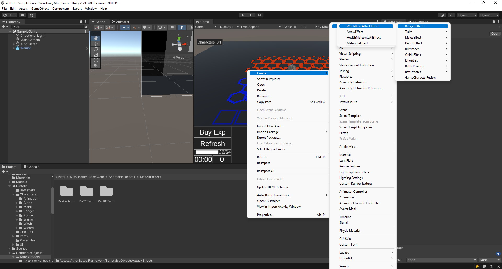
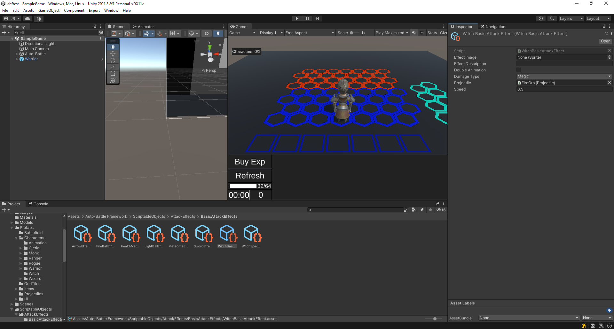
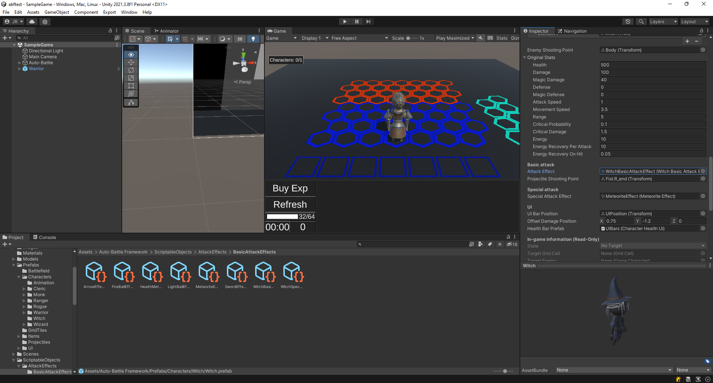
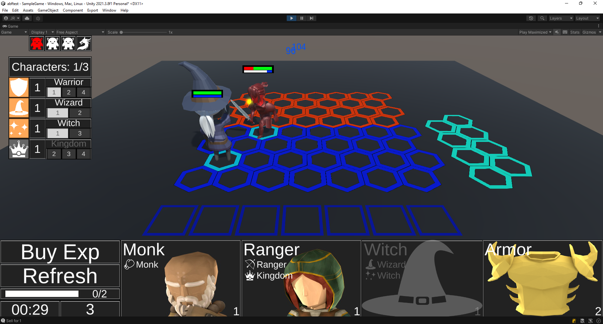
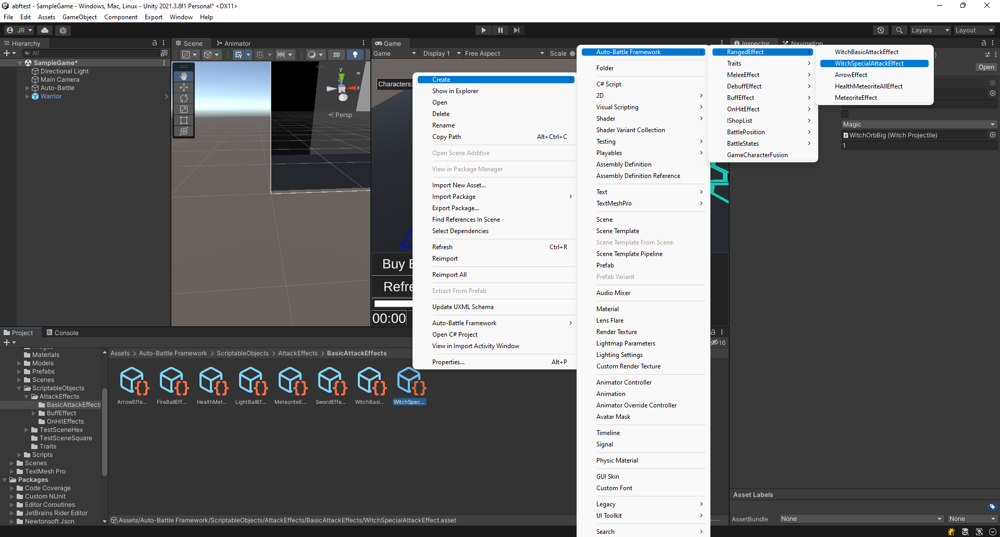
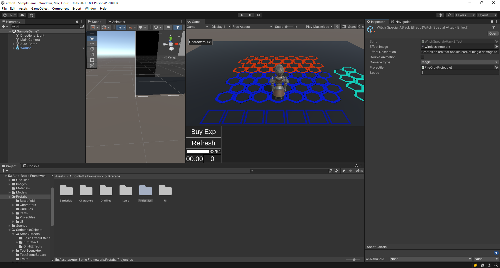
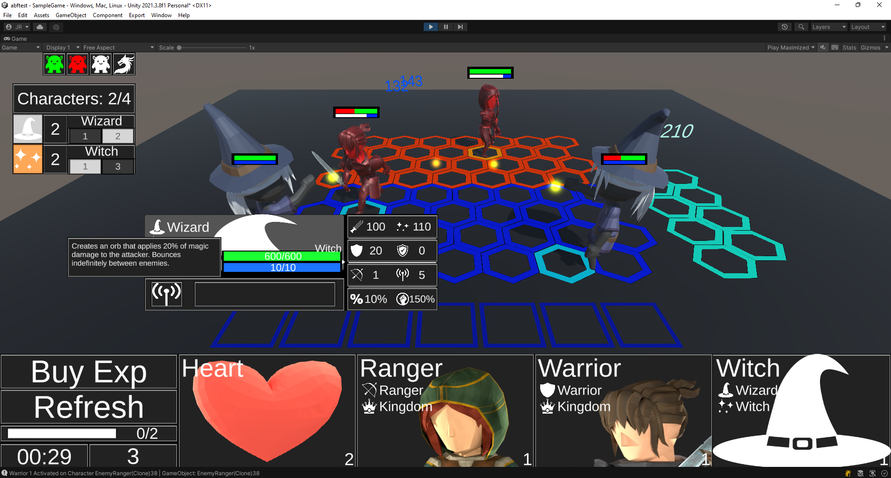

Create a new Attack Effect
An Attack Effect is the damage and effects associated with the basic attack animation or the special attack animation.
In most cases, for the basic attack, we will be able to use SwordEffect for melee attacks, and ArrowEffect for ranged attacks.
SwordEffect: Performs a basic melee attack, or at range if it is not necessary to create a projectile for the attack.
ArrowEffect: Performs a basic attack at range, creating a projectile for the attack. The projectile included in the package travels in a straight line to the target. How to create a projectile with a different trajectory is explained in the section Create a new Projectile.
Create a basic Attack Effect
A basic attack is the one performed by a character whenever he is within range of his target, and does not have a full energy bar.
Let's create a new basic ranged attack for the Witch character created in Create a new Game Character.
The witch's basic attack will have a damage bonus the farther away the target is, and ignore the Magic Defenses, but it will not be able to do critical damage, or apply other effects.
Note that for basic attacks it would be normal to use the BasicAttackDamage method, which takes into account doing critical damage and applying effects.
1. Create a new C# script named WitchBasicAttackEffect. Carefully read the comments on all the lines for a description of what they do and why they are there:
using AutoBattleFramework.BattleBehaviour.GameActors;
using AutoBattleFramework.Formulas;
using AutoBattleFramework.Skills;
using UnityEngine;
/// <summary>
/// Basic attack effect for the witch character. Gets a bonus damage the further the target is.
/// </summary>
[CreateAssetMenu(fileName = "WitchBasicAttackEffect", menuName = "Auto-Battle Framework/Effects/RangedEffect/WitchBasicAttackEffect", order = 1)] //Allows the easy creation of the Scriptable Object.
public class WitchBasicAttackEffect : RangedEffect //Since it is a ranged attack, it inherits from the RangedEffect class. If it were melee, it would inherit from the MeleeEffect class.
{
//Reference to the spawn position of the projectile.
Transform shootingPoint;
// Method called through the animation event Attack() or SpecialAttack() of the GameCharacter.
public override void Attack(GameCharacter ai, Transform shootingPoint)
{
this.ai = ai; // Save the attacking GameCharacter
this.shootingPoint = shootingPoint; // Save the attacking GameCharacter shooting point.
SpawnProjectile(); // Spawn the projectile.
}
// Creates a new Projectile and set its properties.
protected override Projectile SpawnProjectile()
{
Projectile proj = Instantiate(projectile) as Projectile; //Instantiate the projectile
proj.transform.position = shootingPoint.transform.position; // Move the projectile to the shooting point.
proj.transform.LookAt(ai.TargetEnemy.EnemyShootingPoint); // Aim the projectile to the target.
proj.SetTarget(ai, ai.TargetEnemy, speed, this); // Set source GameCharacter, the target of the projectile, the speed and this AttackEffect.
return proj;
}
// Method called when the projectile hits its target.
public override void OnHit(GameCharacter target)
{
// Get damage value depending on the type of damage of the effect.
float damage = ai.CurrentStats.Damage;
if(DamageType == BattleFormulas.DamageType.Magic)
{
damage = ai.CurrentStats.MagicDamage;
}
if (target)
{
float distance = ai.CurrentGridCell.DistanceToOtherCell(target.CurrentGridCell); // Get the distance between the source and target characters.
float extraDamage = damage + (damage * distance * 0.1f); // Get a bonus damage based on the distance.
ai.CurrentStats.Energy = Mathf.Clamp(ai.CurrentStats.Energy + (int)ai.CurrentStats.EnergyRecoveryPerAttack, 0, ai.InitialStats.Energy); // Get some energy.
BattleFormulas.RecieveDamage(target,extraDamage,BattleFormulas.DamageType.Magic,ai.GetDamageColor(BattleFormulas.DamageType.Magic)); // Reduce the Health of the defending character, ignoring the magic defense.
}
}
}
2. Right click on a project folder, and click on "Create/Auto-Battle Framework/Effects/Ranged Effect/WitchBasicAttackEffect". This will create a new Scriptable Object of the Attack Effect.
 Create the Witch Basic Attack Effect.
3. Select the new WitchBasicAttackEffect. The following fields are required in the inspector:
- Effect Image: Sprite representing the effect. We can leave it empty since for basic attacks the icon is never displayed in the UI.
- Effect Description: Description of this Attack Effect. We can leave it empty since for basic attacks the description is never displayed in the UI.
- Double Animation: If the attack consists of two animations (e.g. load arrow and release arrow), check this option. Leave it unchecked.
- Damage Type: The type of damage the attack will inflict. Set it to Magic.
- Projectile: The prefab of the projectile that will be used by this Attack Effect. For the time being, we will use the FireOrb projectile included in the project.
- Speed: This value can be either the velocity of the projectile or the time it takes for the projectile to reach the target, depending on your script. In this case it means speed, set it to 5.
 Inspector of the Witch Basic Attack Effect.
4. It is necessary to associate the effect to the Witch character. Select the prefab in the project, and in its Inspector, change its Attack Effect to the newly created WitchBasicAttackEffect.
 Associate the Witch Basic Attack Effect to the Witch, changing its Attack Effect.
5. Test the game, the witch should shoot orbs at the target.
 The witch throws orbs at her target, inflicting the correct damage.
Create an Special Attack Effect
A special attack is an attack performed by a character whenever he is within range of his target, and has a full energy bar. When the attack is performed, the energy bar is emptied and must be refilled by basic attacks or by taking damage.
Similar to the creation of the basic attack, we will create a special attack. This will consist of a ranged attack, which will apply a percentage of the magic damage as damage, and will bounce indefinitely between enemies.
1. Create a new C# script named WitchSpecialAttackEffect. Read the comments on each line carefully for a description:
using AutoBattleFramework.BattleBehaviour.GameActors;
using AutoBattleFramework.Formulas;
using AutoBattleFramework.Skills;
using System.Collections.Generic;
using System.Linq;
using UnityEngine;
/// <summary>
/// Special attack effect for the witch character. Inflicts a percentage of the character's base damage as damage.
/// Once the target is damaged, another projectile is created and attacks another enemy, which creates another one, and so on indefinitely.
/// </summary>
[CreateAssetMenu(fileName = "WitchSpecialAttackEffect", menuName = "Auto-Battle Framework/Effects/RangedEffect/WitchSpecialAttackEffect", order = 1)] //Allows the easy creation of the Scriptable Object.
public class WitchSpecialAttackEffect : RangedEffect //Since it is a ranged attack, it inherits from the RangedEffect class. If it were melee, it would inherit from the MeleeEffect class.
{
//Reference to the spawn position of the projectile.
Transform shootingPoint;
// Method called through the animation event Attack() or SpecialAttack() of the GameCharacter.
public override void Attack(GameCharacter ai, Transform shootingPoint)
{
this.ai = ai; // Save the attacking GameCharacter
this.shootingPoint = shootingPoint; // Save the attacking GameCharacter shooting point.
SpawnProjectile(); // Spawn the projectile.
}
// Creates a new Projectile and set its properties.
protected override Projectile SpawnProjectile()
{
Projectile proj = Instantiate(projectile) as Projectile; //Instantiate the projectile
proj.transform.position = shootingPoint.transform.position; // Move the projectile to the shooting point.
proj.transform.LookAt(ai.TargetEnemy.EnemyShootingPoint); // Aim the projectile to the target.
proj.SetTarget(ai, ai.TargetEnemy, speed, this); // Set source GameCharacter, the target of the projectile, the speed and this AttackEffect.
return proj;
}
// Method called when the projectile hits its target.
public override void OnHit(GameCharacter target)
{
Vector3 nextPosition = target.EnemyShootingPoint.position; //Get the position of the projectile when it hit the target.
float damage = ai.CurrentStats.MagicDamage * 0.2f; // Applies 20% of the magic damage of the character.
BattleFormulas.SpecialAttackDamage(BattleFormulas.DamageType.Magic, damage, ai.TargetEnemy, ai); // Damages the target.
SpawnProjectileRebound(nextPosition); // Spawn a new projectile in the last known position.
}
// Creates a new Projectile when the last one hits the target.
Projectile SpawnProjectileRebound(Vector3 nextPosition)
{
// Get a list of possible targets. They must be alive.
List<GameCharacter> targets = null;
if (AutoBattleFramework.BattleBehaviour.Battle.Instance.Team1.Contains(ai))
{
targets = AutoBattleFramework.BattleBehaviour.Battle.Instance.Team2;
}
else
{
targets = AutoBattleFramework.BattleBehaviour.Battle.Instance.Team1;
}
targets = targets.Where(x => x.State != GameCharacter.AIState.Dead).ToList();
if (targets.Count > 0 || ai.State != GameCharacter.AIState.Dead)
{
Projectile proj = Instantiate(projectile) as Projectile; //Create the projectile.
proj.transform.position = nextPosition; //Set the position to the last known position.
GameCharacter randomTarget = targets[Random.Range(0, targets.Count)]; //Select a random target.
proj.transform.LookAt(randomTarget.EnemyShootingPoint); // Aim the projectile to the target.
proj.SetTarget(ai, randomTarget, speed, this); // Set the source and target character, the speeds and this Attack Effect.
return proj;
}
return null;
}
}
2. Right click on a project folder, and click on "Create/Auto-Battle Framework/Effects/Ranged Effect/WitchSpecialAttackEffect". This will create a new Scriptable Object of the Attack Effect.
 Create the Witch Special Attack Effect.
3. Select the new WitchSpecialAttackEffect. The following fields are required in the inspector:
- Effect Image: Sprite representing the effect. Select the wireless-network sprite included in the package.
- Effect Description: Description of this Attack Effect. Enter "Creates an orb that applies 20% of magic damage to the attacker. Bounces indefinitely between enemies.".
- Double Animation: If the attack consists of two animations (e.g. load arrow and release arrow), check this option. Leave it unchecked.
- Damage Type: The type of damage the attack will inflict. The type of damage does not matter, since it is fixed in the script to do magic damage.
- Projetile: The prefab of the projectile that will be used by this Attack Effect. For the time being, we will use the FireOrb project included in the project.
- Speed: This value can be either the velocity of the projectile or the time it takes for the projectile to reach the target, depending on your script. In this case it means speed, set it to 5.
 Inspector of the Witch Special Attack Effect.
4. It is necessary to associate the effect to the Witch character. Select the prefab in the project, and in its Inspector, change its Special Attack Effect to the newly created WitchSpecialAttackEffect.
Associate the Witch Special Attack Effect to the Witch, changin its Attack Effect.
5. Test the game, the special attack should throw orbs that bounce on him between enemies. Note that you will need several enemies to see if it works correctly. See also the description of the special attack.
 The witch throws orbs at her target, then bounces to another target. The icon and description are correct.
As the projectile is used by both the Wizard character and the Witch, the following section shows how to Create a new Projectile for the witch.